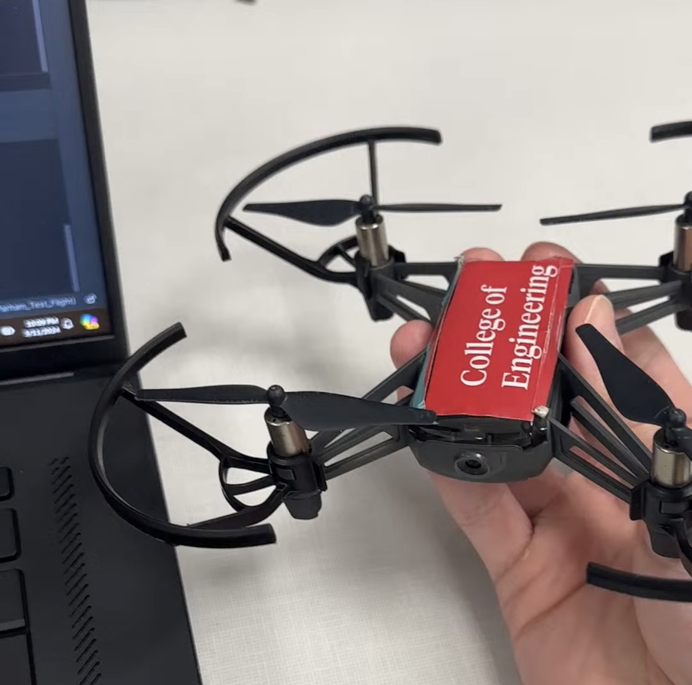
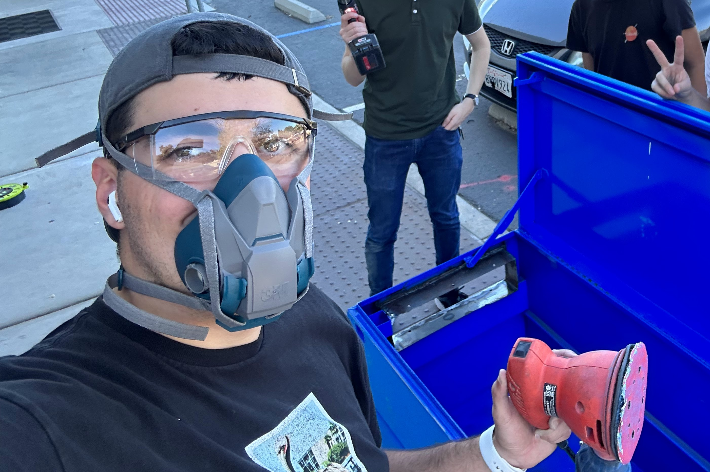
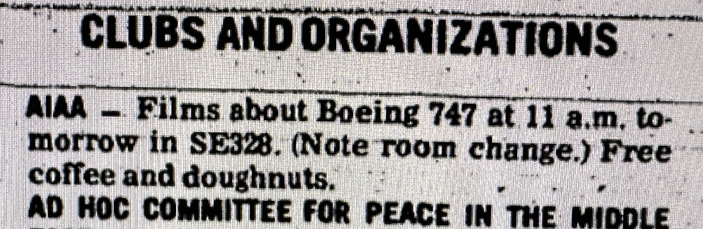
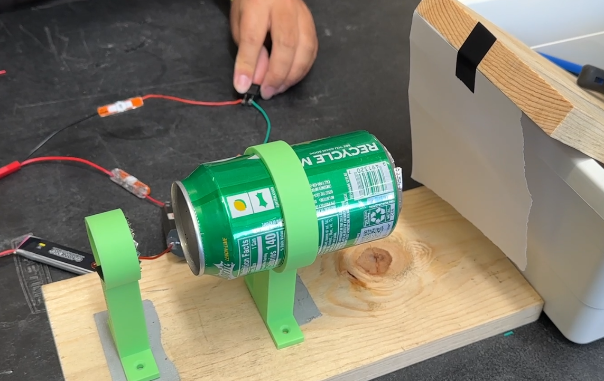
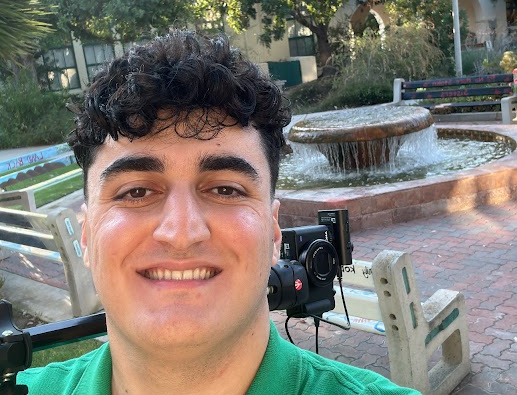

My Projects
A collection of my academic, research, and personal projects

SPACE Lab Drone Autonomy
Fall 2023 - Summer 2024
Extracurricular ProjectDrone autonomy programming using Python, OpenCV, and ORB-SLAM3.
AE 460 - Spacecraft Design
Fall 2025 & Spring 2026
Class ProjectTwo semester senior design course. Developing the conceptual and preliminary design of a Solar Gravitational Lens spacecraft mission: covering mission definition, payload integration, systems architecture, and community-impact considerations.

Avionics Ground Systems
Fall 2023 - Fall 2024
Extracurricular ProjectVarious work at the SDSU Rocket Project.
AE 303 - Experimental Aerodynamics
Fall 2024
Class ProjectOperating characteristics of subsonic and supersonic wind tunnels. Aerodynamic characteristics of wings and bodies. Flow visualization techniques. Force, moment and pressure distribution measurement. Use of hot-wire anemometer and schlieren equipment.
NASA L'SPACE MCA
Summer 2022
Extracurricular ProjectMission Concept Academy. Took up the role of Thermal Engineer for a proposed NASA Martian Rover.

AIAA SDSU Student Branch History
Summer & Fall 2025 - SciTech 2026
Research ProjectHistorical documentation of the AIAA student branch at SDSU from 1963 to present.

Magnetoplasmadynamic Thruster
Fall 2024
Personal ProjectMagnetoplasmadynamic Thruster built using a 1s Lipo battery, DC 3V → 400kV transformer, nickel strips, and an empty soda can for a YouTube video.
NASA L'SPACE NPWEE
Spring 2022
Extracurricular ProjectNASA Proposal Writing and Evaluation Experience.

YouTube Channel & Videography
Officially since 2022 | Unofficially since 7 years old
Personal ProjectBorn out of the combination of my love for Engineering, Videography, and Communication.
NCAS Mission 3 at NASA AFRC
Summer 2022
Extracurricular ProjectNASA Community College Aerospace Scholars at the Armstrong Flight Research Center.